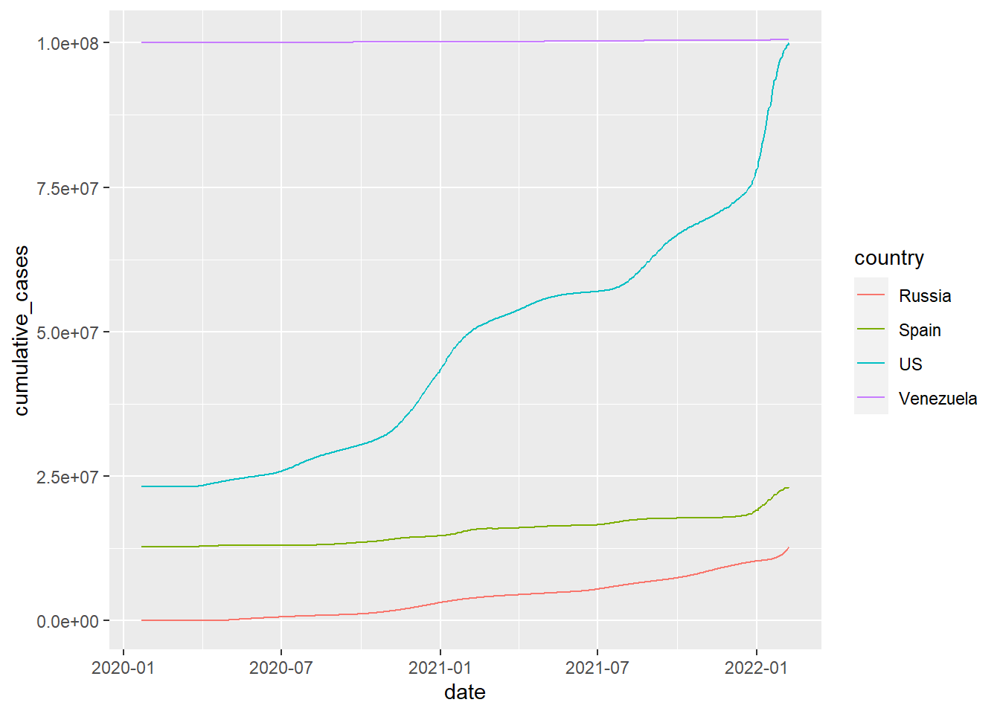
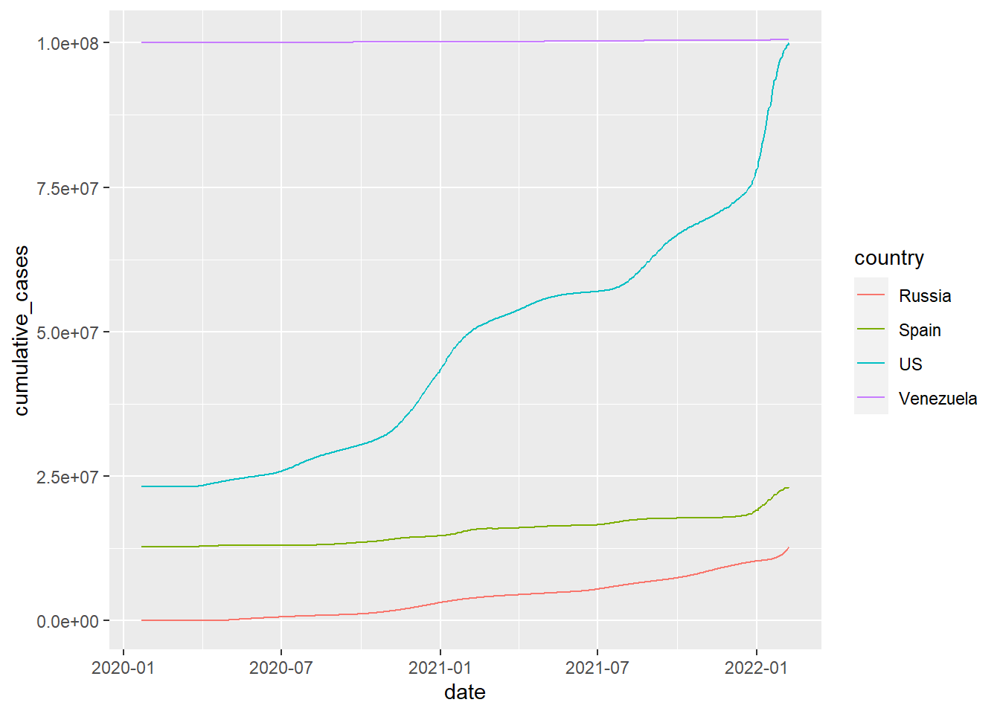
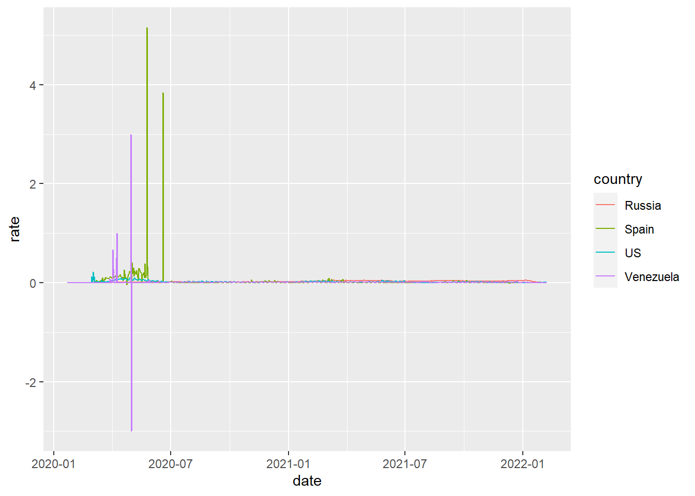
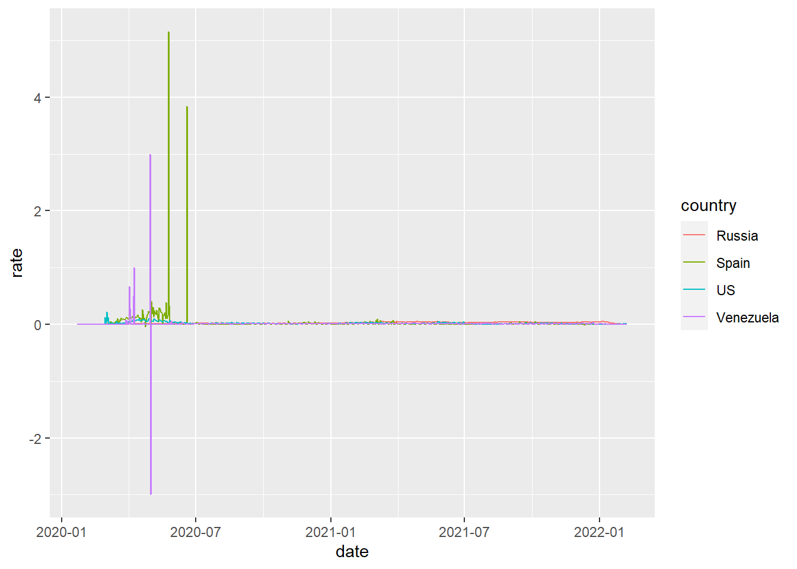
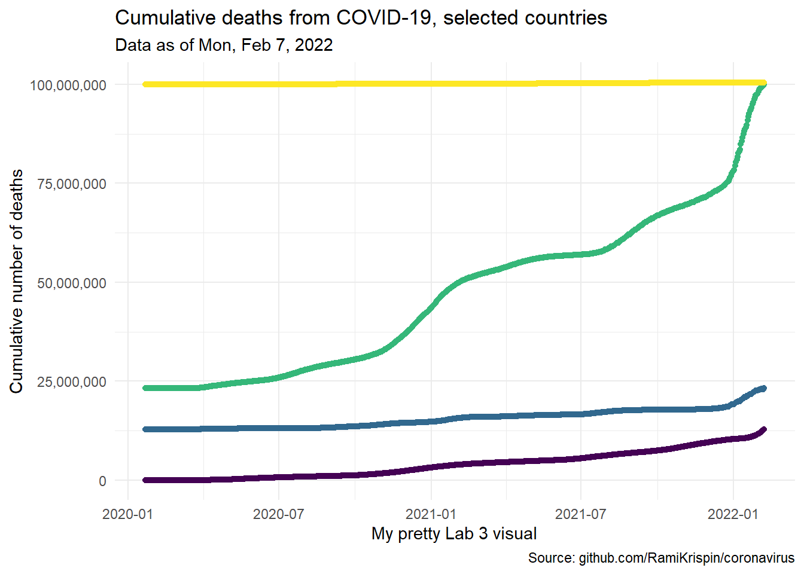

10 Lab 3: coronavirus visualization, data wrangling, and dates
The package is available on GitHub here and is updated daily.
10.1 show some neat visuals. Perhaps for the US, China, Russia, Spain, and Venezuela:
- COVID cases over time
- COVID rates over time
- COVID deaths over time
- COVID death rates over time
library(coronavirus)
head(coronavirus)
#> date province country lat long type
#> 1 2020-01-22 Alberta Canada 53.9333 -116.5765 confirmed
#> 2 2020-01-23 Alberta Canada 53.9333 -116.5765 confirmed
#> 3 2020-01-24 Alberta Canada 53.9333 -116.5765 confirmed
#> 4 2020-01-25 Alberta Canada 53.9333 -116.5765 confirmed
#> 5 2020-01-26 Alberta Canada 53.9333 -116.5765 confirmed
#> 6 2020-01-27 Alberta Canada 53.9333 -116.5765 confirmed
#> cases uid iso2 iso3 code3 combined_key population
#> 1 0 12401 CA CAN 124 Alberta, Canada 4413146
#> 2 0 12401 CA CAN 124 Alberta, Canada 4413146
#> 3 0 12401 CA CAN 124 Alberta, Canada 4413146
#> 4 0 12401 CA CAN 124 Alberta, Canada 4413146
#> 5 0 12401 CA CAN 124 Alberta, Canada 4413146
#> 6 0 12401 CA CAN 124 Alberta, Canada 4413146
#> continent_name continent_code
#> 1 North America NA
#> 2 North America NA
#> 3 North America NA
#> 4 North America NA
#> 5 North America NA
#> 6 North America NA
library(dplyr)
library(ggplot2)#> country n
#> 1 Russia 748
#> 2 Spain 748
#> 3 US 748
#> 4 Venezuela 748
#> date country deaths
#> 1 2020-01-22 Russia 0
#> 2 2020-01-23 Russia 0
#> 3 2020-01-24 Russia 0
#> 4 2020-01-25 Russia 0
#> 5 2020-01-26 Russia 0
#> 6 2020-01-27 Russia 0
#> country n
#> 1 Russia 748
#> 2 Spain 748
#> 3 US 748
#> 4 Venezuela 748
#> date country confirmed
#> 1 2020-01-22 Russia 0
#> 2 2020-01-23 Russia 0
#> 3 2020-01-24 Russia 0
#> 4 2020-01-25 Russia 0
#> 5 2020-01-26 Russia 0
#> 6 2020-01-27 Russia 0
#> date country deaths confirmed
#> 1 2020-01-22 Russia 0 0
#> 2 2020-01-23 Russia 0 0
#> 3 2020-01-24 Russia 0 0
#> 4 2020-01-25 Russia 0 0
#> 5 2020-01-26 Russia 0 0
#> 6 2020-01-27 Russia 0 0
#> country n
#> 1 Russia 748
#> 2 Spain 748
#> 3 US 748
#> 4 Venezuela 748 
 

#> date country deaths
#> Min. :2020-01-22 Length:2992 Min. :-1918.0
#> 1st Qu.:2020-07-26 Class :character 1st Qu.: 5.0
#> Median :2021-01-29 Mode :character Median : 122.0
#> Mean :2021-01-29 Mean : 446.1
#> 3rd Qu.:2021-08-04 3rd Qu.: 632.2
#> Max. :2022-02-07 Max. : 4442.0
#> confirmed cumulative_cases cumulative_deaths
#> Min. : -74937 Min. : 0 Min. : 0
#> 1st Qu.: 450 1st Qu.: 12782791 1st Qu.: 329264
#> Median : 7723 Median : 23178262 Median : 423834
#> Mean : 33599 Mean : 41557773 Mean : 660872
#> 3rd Qu.: 27682 3rd Qu.:100031030 3rd Qu.:1329377
#> Max. :1369637 Max. :100527313 Max. :1334864
#> rate
#> Min. :-3.00000
#> 1st Qu.: 0.00458
#> Median : 0.01281
#> Mean : 0.02253
#> 3rd Qu.: 0.02342
#> Max. : 5.15591